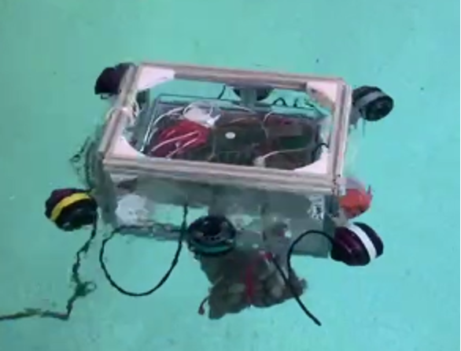
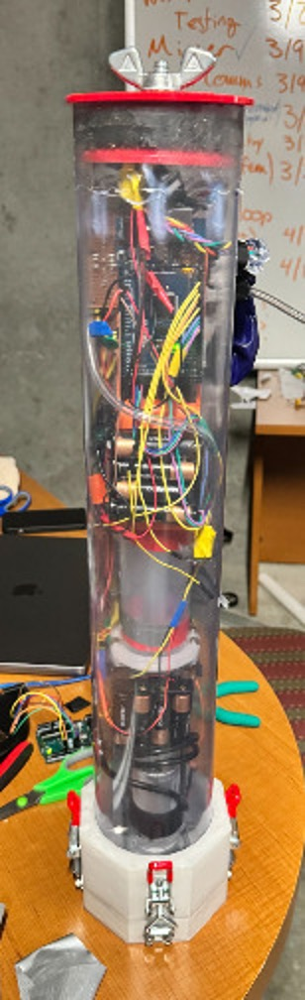

MATE ROV
After a full year with WashU robotics, we were looking to expand the club and create a project team that would compete with other universities. We found the Marine Advanced Technology Education ROV competition (ROV: remote operated vehicle) to be a fun and more unique challenge that filled a niche other engineering clubs did not. The college level division of the MATEROV challenge is called the Explorer class, and typically consists of three major tasks the robot must complete. The main robot is a waterproof, tethered vehicle that is piloted from a base station on dry land. Thrusters, manipulators, and sensors are attached to a frame and electrical system drawing from a surface power source. A separate, completely independent capsule we called the Float was also created for one of the missions. This capsule could submerge and rise using a ballast system, and was controlled remotely and contained a sealed sensor suite.

